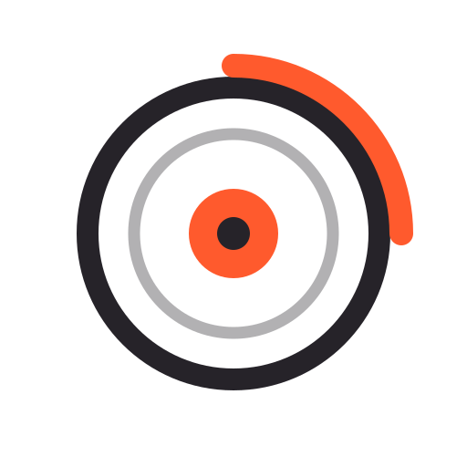

戰鬥陀螺・娃娃機・線上一番賞——公開亂數可驗證公平，抽完不槓龜，24 小時想玩就玩。
傳統扭蛋或刮刮樂可能槓龜，但一番賞不一樣：每一張籤都對應到一個獎品，所以你每抽一定會拿到東西，差別只在賞別大小（A 賞、B 賞……到最珍貴的最後賞）。這也是一番賞讓人「一抽再抽」的魅力來源。
以上是「封面版面結構」提案（沿用參考站 nav→大字 hero→主題縮圖列→說明區塊 的節奏），皮膚仍是 Go Shoot 動感橘×炫酷黑，沒有動色系。 下方「三大主打」「新品發售追蹤」等既有內容區塊不受影響，這個提案只涵蓋首頁最上面封面的部分。